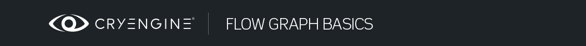
Обзор
Разделы
После завершения этого руководства вы сможете настроить простую миссию, определить начальную точку уровня, назначить одну цель и загрузить триггер следующего уровня.
Чем более нелинейными являются цели миссии, тем больше времени вам нужно потратить на их тестирование. Поэтому новичкам рекомендуется начинать с линейного игрового пути: 1-я цель, завершение триггеров, 2-я цель и триггеры, завершение миссии.
Добавление точки появления
Под Создать объект -> Объект -> Другие, перетащите SpawnPoint объект в точку в окне просмотра перспективы.
Рис1: Создание точки появления 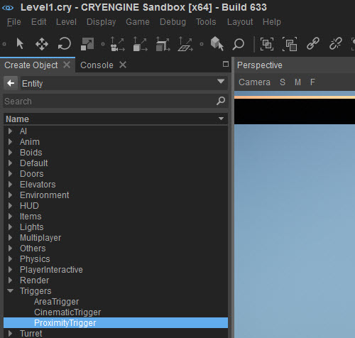
Обычно рекомендуется использовать Flow Graph написать сценарий игры для появления игрока в точке появления. В противном случае, когда вы запустите Лаунчер, вы можете появиться в 0,0,0 координаты местоположения внутри уровня.
Чтобы Точка появления заработала, выберите ее и щелкните по ней правой кнопкой мыши. Затем выберите «Создать Flow Graph» и дайте ему логическое имя, например «SpawnPoint».
Затем щелкните правой кнопкой мыши Flowgraph и выберите Добавить узел -> Игра -> Начать. Затем убедитесь, что у вас выбрана точка появления, щелкните правой кнопкой мыши пустое место и выберите Добавить выбранный объект.
Теперь все, что вам нужно сделать, это нажать и удерживать вывод порт Старт узел и перетащите появившуюся стрелку в Спавн порт SpawnPoint узел.
Рис. 2. Использование Flowgraph для создания сценария точки появления в игре. 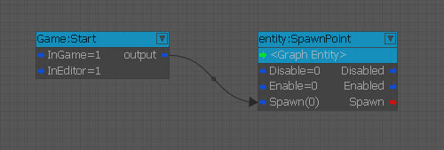
Причина, по которой это не автоматизировано, заключается в том, что уровни могут иметь несколько точек появления, например, по одной на каждой контрольной точке. Поэтому вам нужно определить, где и когда вы хотите, чтобы игрок появлялся.
Запускающие события
Триггеры близости
Вы можете использовать триггеры для активации различных действий в Редакторе. В этом уроке рассматриваются два основных из них: Триггеры близости и Триггеры области. Вы также можете перетаскивать триггеры в окно просмотра «Перспектива».
Рис3: местоположение ProximityTrigger
Вы можете нажать double или перетащить его и поместить этот триггер на свой уровень. Он будет отображаться как Т значок с желтой рамкой вокруг него:
Рис.4: Установлен триггер приближения. 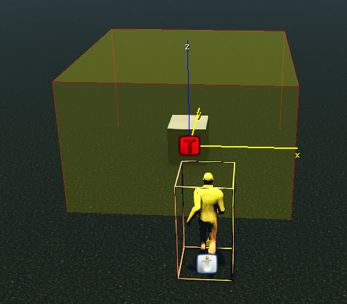
Выбрав триггер близости, вы можете изменить его свойства в инструменте «Свойства»:
Рис5: Свойства триггера близости 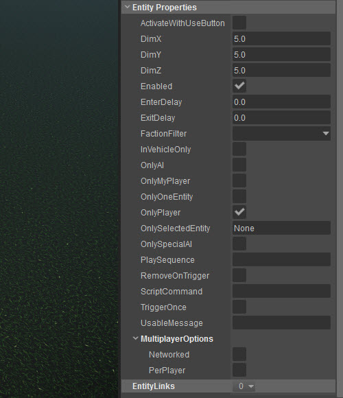
Здесь вы можете настроить множество вещей, например размер области, в которой он срабатывает (DimX, DimY, DimZ), может ли он быть вызван только AI (OnlyAI), игрок (OnlyMyPlayer) и т. д., или если его можно запустить только один раз (TriggerOnce).
Размещение триггера области
AreaTrigger разделен на две части: Форма области и Триггер области Сущность. Триггер размещается из Создать объект вкладка.
Сначала зайдите в Создать объект инструмент (Сущности -> Триггеры -> AreaTrigger) и поместите один вниз на уровне.
Затем создайте Форма используя Площадь инструмент, найденный в Создать объект инструмент (Площадь -> Форма)и нарисуйте фигуру, щелкнув четыре разных места и нажав double последнее место, чтобы закрыть фигуру.
Убедитесь, что Привязка к геометрии включается перед рисованием фигуры, так как в противном случае она может быть нарисована вертикально, а не на местности.
Рис6: Создание фигуры с помощью инструмента «Площадь» 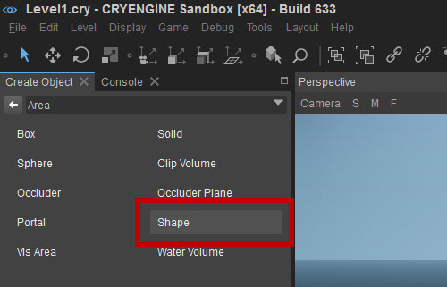
Рис.7: Нарисована форма области. 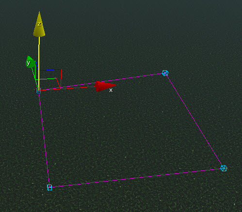
Затем поместите триггер области из Создать объект -> Объект -> Триггеры -> Триггер области и назначьте AreaTrigger к форме.
Для этого выберите фигуру и нажмите кнопку рядом с EntityLinks в Свойства и выбирая Добавить:
Рис.8: Добавление EntityLink 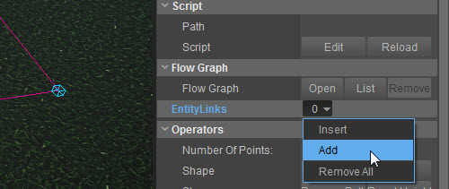
Когда вы это сделаете, под заголовком EntityLinks появится поле. Нажмите на это поле, и там будет написано «Выберите объект...». Все, что вам нужно сделать сейчас, это нажать на AreaTrigger, который вы создали ранее, и фигура и AreaTrigger будут связаны:
Pic9: Выбор AreaTrigger 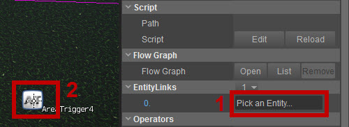
Формы областей при создании представляют собой плоскую плоскость. Технически это означает, что «область активации» этой формы бесконечна по оси Z. Для большинства ситуаций это OK, если только у вас не многоэтажная установка, в которой вы хотите активировать ее только на первом этаже.
Чтобы ограничить эту бесконечную ось Z в форме области, мы можем назначить высоту формы из ее свойств. Для этого измените DimZ имущество в своем Свойства сущности:
Рис. 10. Изменение высоты триггера приближения. 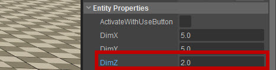
Это затем ограничит высоту фигуры определенным объемом. X и Y определяются формой области, а высота определяет предел оси Z.
Добавление логики к триггерам
Создание Flow Graph
Чтобы определить, что должен делать триггер, необходимо создать Flow Graph. Выберите AreaTrigger мы только что создали, а затем нажмите Открыть в FlowGraph раздел Свойства сущности в Свойства инструмент или щелкните правой кнопкой мыши AreaTrigger в окне просмотра и выберите Создать Flow Graph.
Рис11: Создание Flow Graph 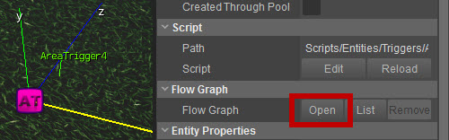
Укажите имя группы для Flow Graph, нажав Новый... или добавив его в существующую группу в списке. Хорошей практикой является организация уровня по слоям, а затем присвоение Flow Graph имени, содержащего слой, на который он в основном влияет.
Мы создадим новую группу под названием Миссия.
Рис12: Создание новой группы 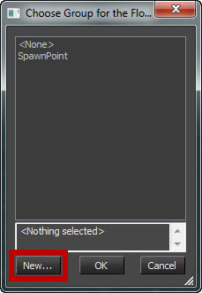
Для получения дополнительной информации см. документацию по использованию Как использовать Flow Graph.
Добавление объекта в Flow Graph
Сначала убедитесь, что AreaTrigger выбран в редакторе Sandbox. Затем в FlowGraph окне щелкните правой кнопкой мыши по пустому полю посередине и выберите Добавить выбранный объект.
Рисунок 13: Добавление узла AreaTrigger в Flow Graph. 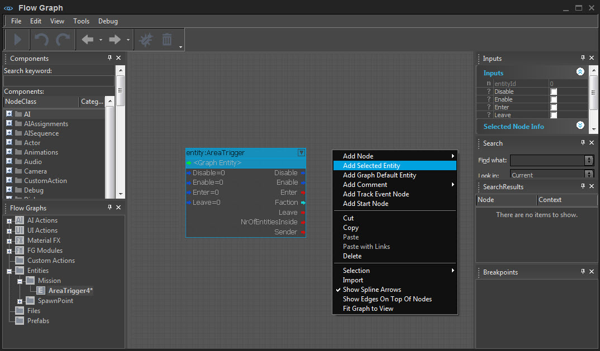
Убедитесь, что AreaTrigger узел можно увидеть, увеличив масштаб с помощью колеса мыши или щелкнув правой кнопкой мыши в пустом месте в Flow Graph и выбрав Подогнать график для просмотра:
Рис. 14. Установка графика для просмотра. 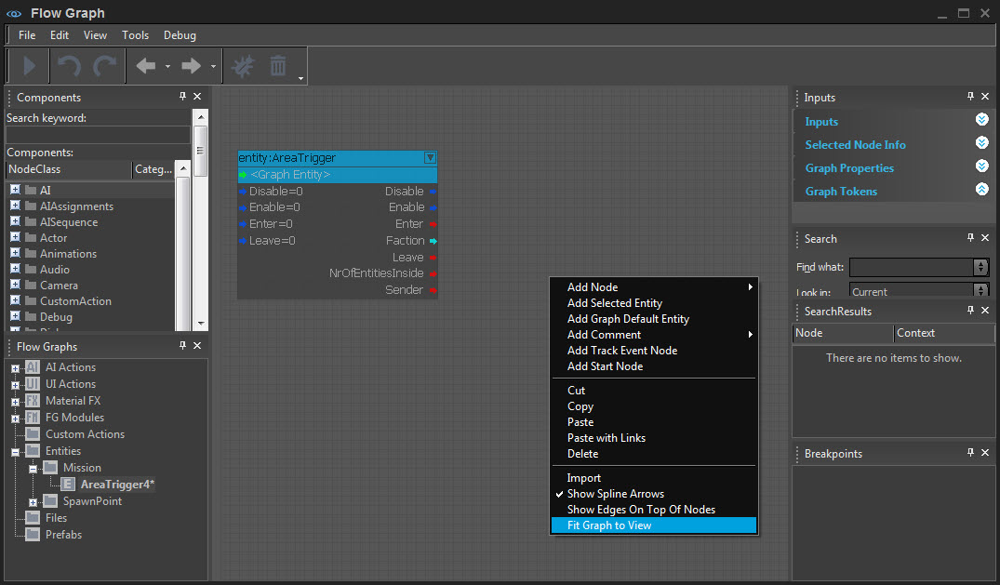
AreaTrigger узел имеет входные события с левой стороны и выходные события с правой стороны.
Добавление цели миссии
Перетащите MissionObjective сущность в место уровня, куда игрок должен отправиться.
Рис15: Местоположение MissionObjective 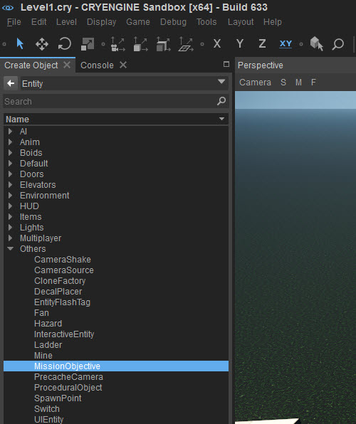
Рис. 16: MissionObjective перетащили на уровень. 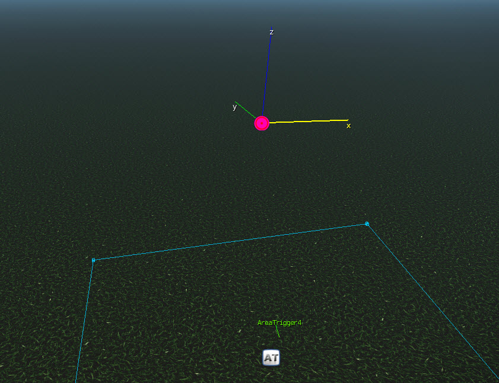
Откройте FlowGraph который вы ранее создали, а затем выберите MissionObjective объект в перспективе.
Теперь добавьте MissionObjective к FlowGraph щелкнув правой кнопкой мыши FlowGraphs главное окно и выбрав Добавить выбранный объект.
Соединение сущностей в FlowGraph
Теперь переместите MissionObjective объект справа от AreaTrigger щелкнув и перетащив рамку объекта.
Как только он окажется на месте, щелкните левой кнопкой мыши и удерживайте Войти порт в AreaTrigger и перетащите указатель мыши на Активировать порт в MissionObjective:
Рис17: Соединение узла AreaTrigger с узлом MissionObjective. 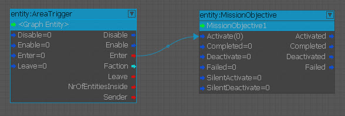
Цель миссии имеет несколько важных исходных данных:
Ввод | Описание |
|---|---|
Активировать | 0 означает, что цель не активирована, а 1 означает, что она активирована. |
Завершено | Отмечает цель в PDA как выполненную. |
Деактивировать | Удаляет цель из PDA. |
Не удалось | Помечает цель в PDA как невыполненную. |
Загрузка новой миссии
Как только игрок выполнил свою задачу, давайте загрузим следующий уровень (очевидно, вы можете вызвать другую цель после первого, но для этого теста просто загрузите следующий уровень. Подойдет любой случайный уровень, например Лесной, если вы загрузили образец проекта CRYENGINE GameSDK с сайта База данных активов).
- Поместите ProximityTrigger над MissionObjective узел.
- Добавьте ProximityTrigger узел к Flow Graph.
- Подключите Войтииз порт ProximityTrigger с Завершенов порт MissionObjective.
- Добавить Задержка узел, double-нажмите на него Задержка свойство и установите задержку в 3 секунды.
- Теперь добавьте Миссия -> LoadNextLevel узел.
- Подключите Завершеноиз порт MissionObjective к В из Задержка, затем подключите из из Задержка к вводТриггер порт LoadNextLevel узел.
- Выберите LoadNextLevel узла и в поле Входные данные (Woodland) укажите имя уровня, который необходимо загрузить.
Рис. 18. Загрузка новой миссии с помощью FlowGraph. 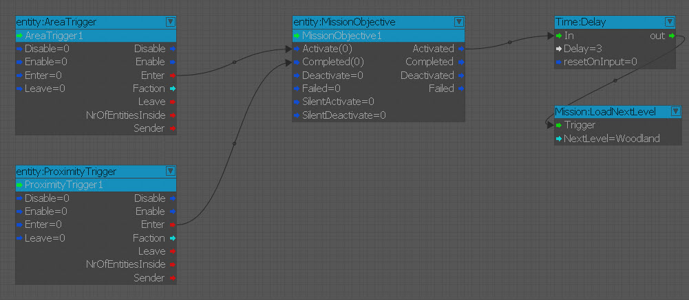
Результат
Когда игрок входит в триггер области, это активирует цель миссии (вверху).
Затем, когда игрок входит в триггер близости (при входе), миссия завершается, и следующая миссия будет загружена через 3 секунды.
Если вы нажмете л (ключ по умолчанию) для цели миссии HUD, вы можете видеть, как миссии приходят в ваш HUD и обновляются по завершении.
Вместо этого вы получите предупреждение в консоли:
[SANDBOX: Внимание] CCryAction: запрет загрузки следующего уровня «имя уровня» в редакторе.